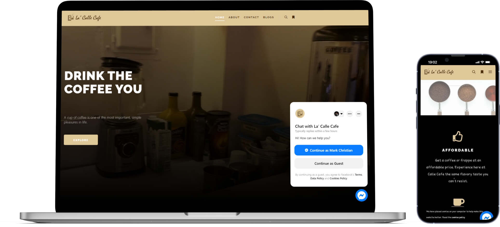
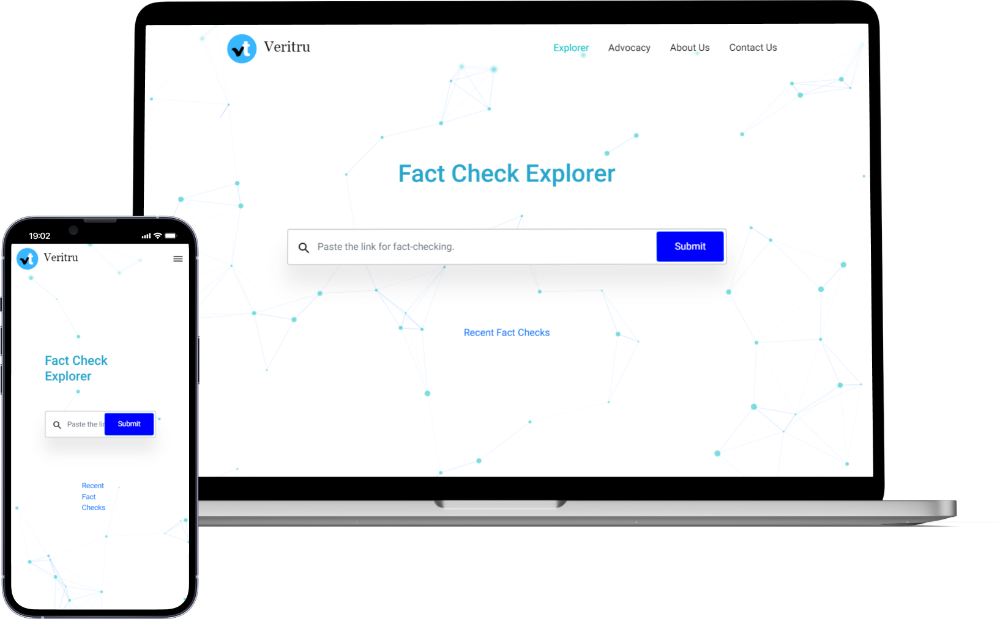

<section id="works">
  <div class="works-wrapper">
    <div class="projects-container">
      <div class="works_intro">
        <div class="highlights">
          <div class="tilt">
            <span>P</span>
            <span>r</span>
            <span>o</span>
            <span>j</span>
            <span>e</span>
            <span>c</span>
            <span>t</span>
            <span>s</span>
          </div>
          <div>that I worked on</div>
        </div>
      </div>
      <div class="project-cards">
        <div>
          <div class="portfolio-card">
            
          </div>
          <div class="proj-contents">
            <h4 class="subheading">
              Angular Portfolio Project
            </h4>
            <p>
              Designed and developed my fancy portfolio website using AngularJS 
              with minimal animations and cute effects.
            </p>
          </div>
        </div>
      </div>
      <div class="project-cards row">
        <div class="col-md-6">
          <div class="portfolio-card">
            
          </div>
          <div class="proj-contents">
            <h4 class="subheading ">
              La Calle Cafe Website
            </h4>
            <p>
              La Calle Café is a specialty coffee store for coffee lovers. 
              The website is intended to aid customers in learning about 
              La Calle Café's background, and the types of pastries and 
              beverages they offer. Moreover, it was created to host content 
              that would educate visitors about various coffee-related articles.
            </p>
          </div>
        </div>
        <div class="col-md-6">
          <div class="portfolio-card">
            
          </div>
          <div class="proj-contents">
            <h4 class="subheading">
              Veritru Project
            </h4>
            <p>
              Team collaborated advocacy project developing a web app built using 
              MEAN stack with fact-checking tool to promote actions against fake news.
            </p>
          </div>
        </div>
      </div>
    </div>
    <div class="works-container">
      <div class="works_intro">
        <div class="highlights">
          Some of my
          <div class="tilt">
            <span>d</span>
            <span>e</span>
            <span>s</span>
            <span>i</span>
            <span>g</span>
            <span>n</span>
            <span>s</span>
          </div>
        </div>
      </div>
      <div class="project-cards">
        <div class="card1">
          <div class="card-content">
            <h4>SmartDeck Mock Up</h4>
            <p>The SmartDeck is a mock-up design for our Applications Development and Emerging Technologies subject. It is intended for the students to review their lessons in a smart way. One of the features is to allows users to create their agenda and reminds them of important dates and times so they can stay on track. As well as build their own quizzes and navigate the already created quizzes.</p>
            <hr><span>Figma, Illustrator</span>
          </div>
        </div>
        <div class="card2">
          <div class="card-content">
            <h4>School of Computing Login Form</h4>
            <p>This is a HAU-SOC login form mobile app for our Applications Development and Emerging Technologies subject using Flutter and Dart.</p>
            <hr><span>Flutter/Dart</span>
          </div>
        </div>
        <div class="card3">
          <div class="card-content">
            <h4>IMDB Mock Up</h4>
            <p>This is a mock-up project submitted in a partial fulfilment of the course requirements in Human and Computer Interaction (HCI). This prototype project was redesigned in lieu of previous IMDb mobile movie app to further imply our understanding in designing interfaces.</p>
            <hr><span>Adobe XD, Photoshop, Illustrator</span>
          </div>
        </div>
      </div>
    </div>
  </div>
</section>


